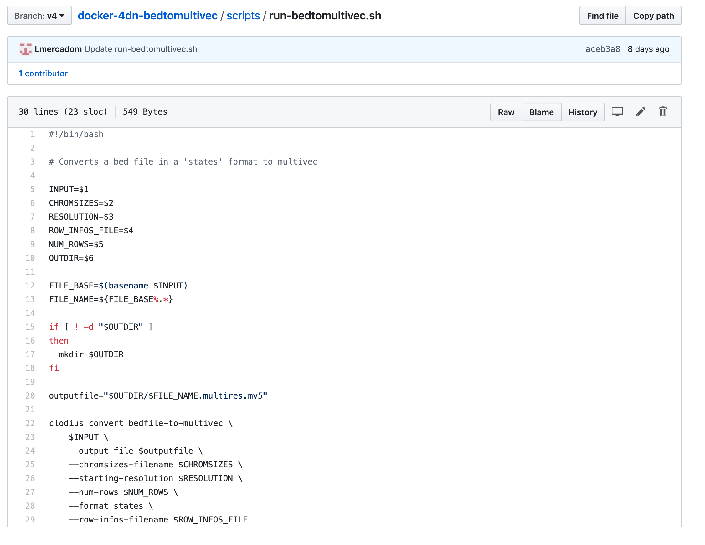
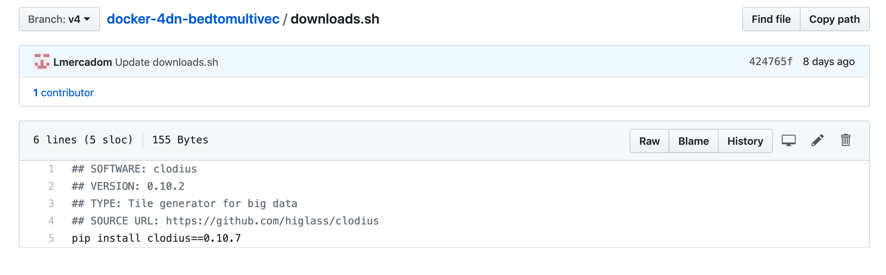
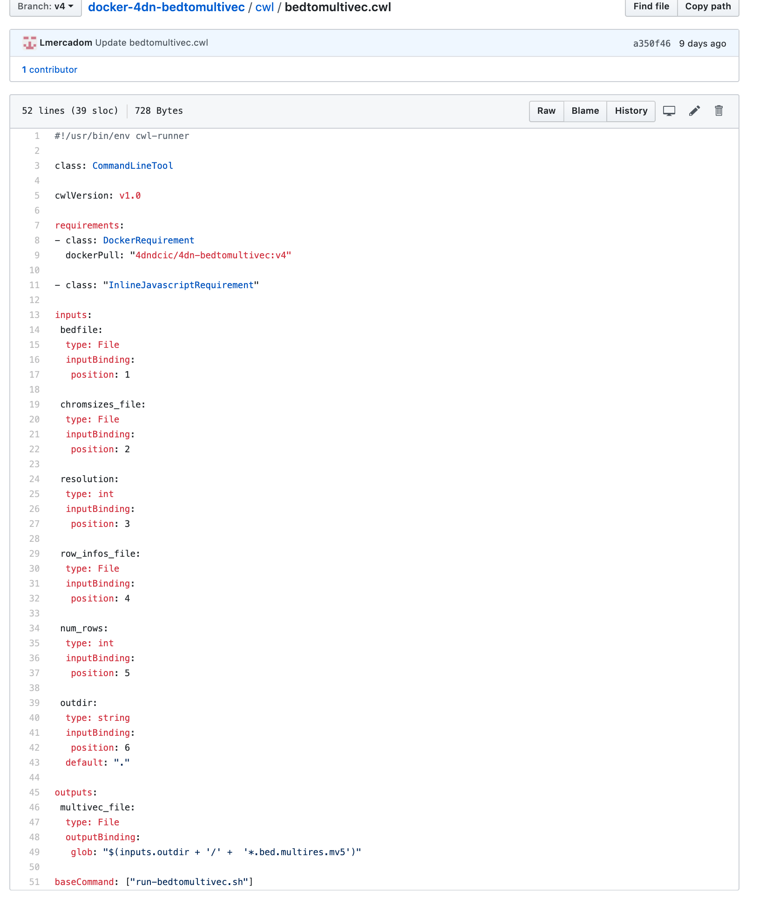
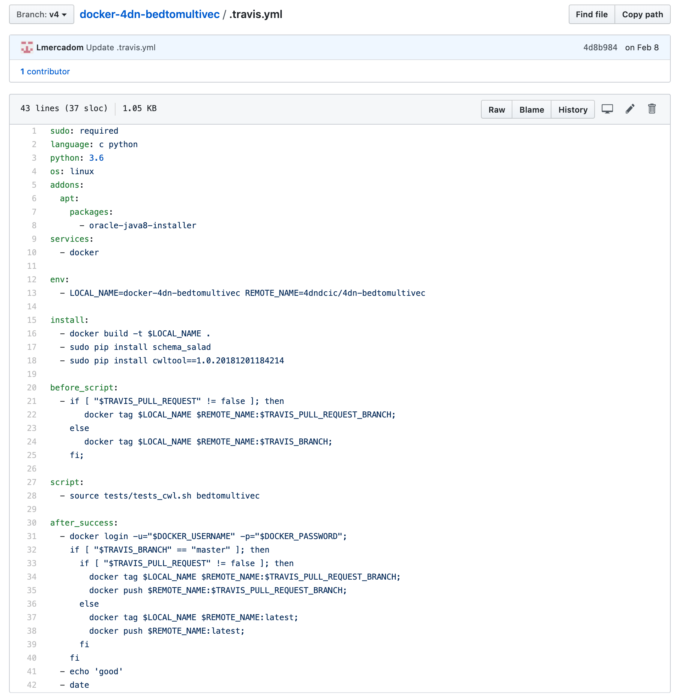

Setting Up GitHub Repo¶
The first thing to do is to create a Github repository for the pipeline. This repository should follow the 4DN-DCIC general conventions.
4DN-DCIC General Conventions
Naming:
The name of the repo should start by the prefix docker-4dn- followed by the name of the repo. The name should be informative about what the pipeline does.
Example: This pipeline converts a file from bed format to multivec format.

Dockerization¶
All the scripts, and software packages will be stored in a docker image so that the scripts can be run independently on the machine that is used. Preserving the computational environment
The Dockerfile:
This file contains the instructions to assemble the docker image.
Example:

You can find a template of the Dockerfile here
The scripts folder
This folder contains the scripts of your bioinformatics software. The run-<tool-name>.sh
contains the command-line instructions to run the scripts and tools inside the docker.
Example:
Note
Depending on the complexity of the pipeline, there can be one or several run-<tool-name>.sh files.
See the Hi-C pipeline for a more complex example of how multiple``run-<tool-name>.sh`` files are used.
https://github.com/4dn-dcic/docker-4dn-hic
The downloads.sh file:
This file contains all the major software components of the pipeline. It should contain comment lines that describe the name and version of individual software tools.
Example: the main software of the bedtomultivec pipeline is clodius. You can refer to the Hi-C pipeline again for a more complex example
The requirements.txt/environment.yml file:
This file contains the dependencies of the software components.
The README file
Make sure to write a README file at the end that explains the different components of the pipeline See here an example https://github.com/4dn-dcic/docker-4dn-hic
Note
Create a new branch from master and label it with a version such as v1, v2…
Testing the docker image locally¶
In order to test the docker image locally, you need to download and install docker.
Once docker is installed in your computer, clone the repo and go to the local folder where the Dockerfile is located. Run the following command to build the local image:
$ docker build -t <name-of-the-local-image>:version .
The name of the local image is the same and the name of the repo. Make sure to include the version that corresponds to the branch label.
Example:
$ docker build -t 4dn-bedtomultivec:v4 .
Once the docker image is built, you can test it by running the following command:
$ docker run -v <path-to-test-files>:/d1/:rw <the-docker-image> run-<repo-name>.sh [parameters]
Example:
$ docker run -v /users/luisa/test_files/:/d1:rw 4dn-bedtomultivec:v4 run-bedtomultivec.sh /d1/test_file.bed /d1/test.chrom.sizes 200 /d1/infos.txt 15 /d1/
Once your local image works properly and gives the correct output, you can push the docker image to DockerHub. Ask Soo to add your Github username to the 4DN-DCIC DockerHub repo.
First tag the image using the following command:
$ docker tag <your_image_name>:<version> 4dndcic/<your_image_name>:<version>
Example:
$ docker tag 4dn-bedtomultivec:v4 4dndcic/4dn-bedtomultivec:v4
Now you can push the image to the DockerHub repo:
$ docker push 4dndcic/4dn-bedtomultivec:v4
Note
You may need to login first to the DockerHub account using the command docker login and entering your username and password. You can now check the docker image in the DockerHub repo.
CWL File(s)¶
Once the docker image is set, the next step is to create a cwl workflow to run the pipeline step by step inside the docker.
First create a folder in the repo called cwl. Inside the folder create a cwl file
called <repo-name>.cwl. The cwl file should describe all the inputs
(including files and parameters), the outputs and the order in which they occur.
Example:
Note
Except for the inputs and outputs, the cwl file follows the same conventions as the example above.
The cwlVersion is v1.0
The dockerPull should make reference to the image in DockerHub
The baseCommand should make reference to the run.sh file
A cwl file template can be found here
Warning
If the pipeline is has multiple steps, you may need multiple cwl files, one for each step. See the the Hi-C pipeline for an example of this. https://github.com/4dn-dcic/docker-4dn-hic
Travis Testing¶
We use travis to test that the cwl workflow works properly. In order to run a travis test, we need a travis.yml file and test files.
The .travis.yml file¶
This travis.yml file tells travis what to do.
Example:
Note
This .travis.yml file is very similar for all the pipelines. You can follow the template and modify the docker image name. The version of the docker image does not need to be included. The .travis.yml file temple can be found here
Tests files¶
Create a folder called tests. Inside the folder add the following folders and
files:
a
test_filesfolder: This is where the input files reside.a
test_input_jsonfolder: This should containinput.jsonfiles specifying the input files
and parameters for the test.
Example:

a
test_cwl.shfile. Just copy this file
Configuring Travis in Github¶
Go to https://travis-ci.com/ and sign up with Github.
Once you are signed in, go to your repository in https://travis-ci.com/, click in more options on the
top right, go to settings, go to the section Environment Variables and add
your DockerHub username and password.
Now you can go back to the main travis CI page and click on Restart build
Warning
Make sure the travis test passes before proceeding to the next steps.